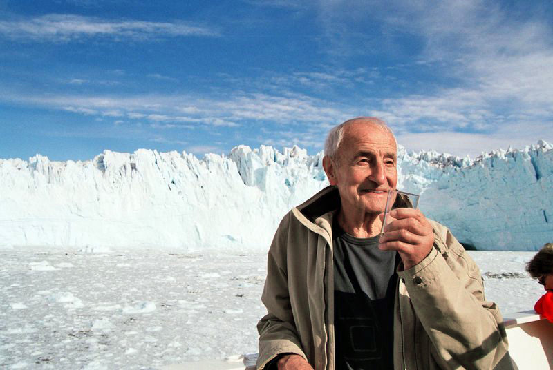

Scientists drill deep into ancient ice to find real air bubbles from 800,000 years ago. Here's what that ice reveals — and why the warming since the late 1800s looks so different from those slow natural swings.
Updated August 27, 2026 — a snapshot of this moment, not an ongoing forecast.
A major heat wave hit North America starting in late June 2026. Record or near-record temperatures hit across the U.S. and Canada, including 113°F in Phoenix (Jul 6–8) and a new all-time record of 109°F in Salt Lake City (Jul 12). Nearly half the U.S. population was under an extreme heat warning at its peak.Wikipedia That heat did not stay in Phoenix and Salt Lake City. It sat on a Pacific Northwest that was already in its fourth drought year.
Washington declared its 4th straight drought year on April 8, 2026. The WA Dept. of Ecology cited snowpack at roughly half its usual level, even after a near-normal winter — it just fell as rain instead of snow.WA Ecology
By August 1, 2026, that drought had become a statewide wildfire emergency. Governor Bob Ferguson declared a state of emergency and a statewide burn ban through September 30. The Department of Natural Resources said more than 1,000 fires had burned about 425,000 acres — the most acres since 2021. About 200,000 acres were still burning in 12 large fires. NASA's Earth Observatory, looking at early August smoke, tied the season to drought, heat, and Washington's first-ever National Weather Service "particularly dangerous situation" alert on July 31.WA Governor, Aug. 1NASA Earth Observatory
Three weeks later, the fire map had nearly doubled. On August 24, DNR wildfire communications manager Thomas Kyle-Milward told KOMO News the state had more than 800,000 acres burned so far in 2026, with 15 large uncontained fires still on the landscape. He called it the third-worst fire season by acres burned since 2015. It is also Washington's fourth drought year in a row. He said firefighters would likely still be working into October — and that two of the largest fires, Little Giant and Sinlahekin, would probably stay on the landscape "until the snow flies."KOMO News, Aug. 24
Washington's climate policy, as of August 2026
The Climate Commitment Act remains in place statewide — Washington voters rejected a 2024 ballot measure to cancel it (more on that below).Wikipedia
51M
metric tons — WA's 2030 targetState law requires cutting total emissions to 45% below 1990 levels by 2030.
96.1M
metric tons — WA's 2022 totalDown 0.5% from 2021's 96.6 million — the most recent official inventory.
4th
straight drought yearDeclared April 8, 2026, after snowpack at roughly half its usual level.
Todd Myers of the Washington Policy Center says the state would need 5-7% annual cuts, far above the 0.5% just recorded.KUOW
"Nowhere near on track."
Todd Myers, Washington Policy Center
Environmental advocate Leah Missik reads the same number differently, pointing to "significant steps" already taken while agreeing more progress is needed. The numbers above are the same either way — Myers and Missik disagree about what the 0.5% drop means, not about the 96.1 million figure itself.KUOW
Think About It
Two named experts looked at the same 96.1-million-metric-ton number and described the state's progress very differently. What's the difference between disagreeing about a fact and disagreeing about how to characterize a fact?
Section 1
Deep-Time Climate History
Picture a drink with a really long, skinny straw — one that's 800,000 years long. That's basically what scientists drink from when they study old ice. Antarctica's ice sheet has been building up, layer by layer, for hundreds of thousands of years. Drill down and you're pulling up a frozen timeline.
Nobody had weather instruments 800,000 years ago. Nobody was writing anything down. So how do scientists know what the climate was like that far back? They read clues left behind in nature — clues called climate proxiesNatural evidence that stands in for a direct measurement nobody was around to take — ice cores, sediment layers, tree rings, coral..
Key Word — Climate Proxy
Natural evidence that stands in for a direct measurement nobody was around to take — ice cores, sediment layers, tree rings, coral.NASA
Ice cores are one of the best climate proxies we have. Every year, a fresh layer of snow falls on the ice sheet. Summer and winter snow pack down differently, leaving a distinct stripe — like a tree ring. Count the stripes down from the top, and you know exactly how old the ice at any depth is.NOAA
As snow gets buried, tiny air bubbles seal inside the ice — a direct sample of the atmosphere from the year it formed. The ice itself even holds a "chemical fingerprint" that reveals how cold it was when that snow fell.NOAA
800K
years — longest ice-core recordDrilled at EPICA Dome C, Antarctica.
8
full ice ages, in that spanEach followed by a warm period, over and over.
That record comes from a single site: EPICA Dome C, Antarctica. A second record, the Vostok ice core from a different Antarctic site, independently confirms the same pattern going back about 420,000 years — two separate drill sites telling the same story.NOAANASAWikipedia
None of this was caused by people. Humans weren't around yet, or were too few and too low-tech to change a whole planet's atmosphere. Scientists point to natural causes instead: slow wobbles in Earth's orbit (Milankovitch cyclesRegular, slow changes in the shape of Earth's orbit and the tilt/wobble of its axis, over tens of thousands of years — named for the scientist who calculated them, Milutin Milanković.), volcanic eruptions, and small shifts in the sun's energy.NASA
Atmospheric CO₂ over 800,000 years, EPICA Dome C — never above 300 ppm until today's 431 ppm. Keep this chart in mind: the next section explains that spike.
Section 2
The Greenhouse Effect
Ever gotten into a hot parked car? Sunlight comes in through the glass, warms up the seats, and has a hard time getting back out. Earth's atmosphere does something surprisingly similar — and without it, Earth would be a frozen rock.
Here's the actual mechanism: sunlight warms Earth's surface. The surface tries to release that heat back to space. Certain greenhouse gasesA gas that traps heat instead of letting it escape to space. CO₂, methane, and water vapor are the main ones. catch some of it and send it back down instead of letting it escape.NASA
Key Word — Greenhouse Gas
A gas that traps heat instead of letting it escape to space. CO₂, methane, and water vapor are the main ones.NASA
33°C
colder, with no greenhouse gases at all(that's 59°F) — Earth's average temperature, if the effect vanished tomorrow.
This is normally a good thing. The greenhouse effect is what makes Earth livable in the first place — without it, the ice age charted above wouldn't be the coldest Earth has ever been. It'd be the mildest.NASA
1 · Sunlight
Energy from the sun reaches Earth and warms the land and oceans.
2 · Surface warms
The warmed surface tries to send that heat back out toward space.
3 · Gases trap heat
Greenhouse gases catch some of that heat and send it back down.
So greenhouse gases aren't the villain of this story — not by themselves. Earth needs some of them. The real question: what happens when there's a lot more of them than there used to be?
Section 3
What's Different This Time
You just read about huge climate swings over thousands of years. Ice ages came and went, all driven by slow natural causes. So what's different about the change since the late 1800s? The short answer: speed.
10×
faster than natural post-ice-age warmingNot matched at any point in at least the past 10,000 years.
250×
faster CO₂ rise than after the last ice ageHuman-driven CO₂ increase, compared to the natural rise.
NASA calculated both numbers by comparing the same evidence you just read about — the ice-core record — against direct modern measurements. The gap between them is the whole story of this section: nature moves in millennia, and this moves in decades.NASA
How do scientists know this so precisely? In March 1958, Charles David Keeling set up an instrument at Mauna Loa Observatory, Hawaii, and started continuous, direct CO2 measurement. Nobody has stopped since — scientists call the result the Keeling CurveThe continuous, direct CO₂ record from Mauna Loa since 1958 — a real-time measurement, not a reconstruction from proxies..NOAA
Key Word — Keeling Curve
The continuous, direct CO₂ record from Mauna Loa since 1958 — a real-time measurement, not a reconstruction from proxies.NOAA
The Keeling Curve: from 315 ppm in 1958 to 431 ppm in June 2026 — a steady climb, no plateau, in under 70 years. Put it beside the 800,000-year chart above: the natural record never crossed 300 ppm.
Section 4
Effects Being Observed
These aren't abstract numbers on a chart — they're changes scientists can actually go out and measure, in places you can visit. Here are two: one global, one right in our own backyard.
the rate of sea-level rise since 19932.1 mm/year in 1993 → 4.5 mm/year by 2024.
14%
of Rainier's ice, gone since 1970Measured directly by USGS survey comparison.
Sea levels are rising, worldwide. Satellites have tracked the global average continuously since 1993 — and altogether, sea level has risen about 11.1 cm (4.4 in) since then, with the pace itself still climbing.NASA
Now for our backyard: Mount Rainier's glaciers are shrinking. Mount Rainier, less than 60 miles from Seattle, is the most heavily glaciated peak in the continental U.S. The USGS compared surveys from 1970 and 2007/2008 to get that number — nearly all the mountain's glaciers had thinned and retreated in the years between.USGS
Rising seas and shrinking glaciers are two totally different kinds of evidence — one from orbiting satellites, one from a scientist standing on a mountain with survey gear. They point the same direction.
The warming isn't just numbers in a report. It's visibly reshaping real coastlines and glaciers, including ones close to home.
In 2021, Washington's governor signed the Climate Commitment Act (CCA) — a cap-and-investA program that sets a shrinking legal limit ("cap") on total pollution, then lets companies buy and trade allowances to emit within that limit — with the money raised ("invest") put toward projects like clean transportation and wildfire resilience. program. The state sets a shrinking limit on greenhouse gas from big polluters, and lowers that limit over time. Companies that need to emit more than their share buy "allowances" at auction — that auction money is the program's revenue. First auction: 2023.WikipediaWA Ecology
Washington also has a separate, traditional state fuel tax that funds roads — the CCA is a different program with a different purpose (cutting emissions), even though its costs can also show up at the pump. Exactly how many cents per gallon the CCA adds has been debated; official estimates and independent analyses have landed on different figures, so no single cents-per-gallon number is treated as settled fact here.WA Ecology
35%+
must benefit overburdened communitiesBy law. At least 10% must have Tribal support.
November 2024: voters weighed in. Initiative 2117 would have repealed the CCA entirely. Voters rejected it: ~62% against, ~38% for. The Climate Commitment Act stayed in place. Supporters and opponents together spent over $13 million campaigning before the vote.Wikipedia
Flip a light switch in Washington, and it's probably from a river.HydropowerElectricity generated by the force of flowing or falling water, usually through dams. Produces no direct CO₂ emissions while generating electricity. makes up roughly 60% of the state's electricity generation, more than any other single source — Washington alone generates about a quarter of all U.S. utility-scale hydropower. A big reason why: Grand Coulee Dam, the largest power plant of any kind in the U.S. — in 2024 it generated about 15.4 million MWh, enough to help supply eight western states and parts of Canada.U.S. EIA
Key Word — Hydropower
Electricity generated by the force of flowing or falling water, usually through dams. Produces no direct CO₂ emissions while generating electricity.U.S. EIA
Washington's Carbon Footprint
13.5
metric tons CO₂e per person, WA (2019)Down 15% since 2005.
17.6
metric tons CO₂e per person, U.S. averageSame year, for comparison.
That gap isn't really a story about individual Washingtonians. It's a story about the electricity mix you just read above: a state that leans on hydropower instead of fossil fuels will tend to have a lower footprint, as a structural fact about its energy supply, not a comment on personal choices.WA EcologyEPA
History
How Did We Learn All This?
Every date below came from somewhere — a scientist who ran an experiment, a program that started measuring something and never stopped. Here's the timeline.
1856
Eunice Foote demonstrates the greenhouse effect
She sealed different gases in glass cylinders and set them in the sun. The CO2 cylinder heated the most and stayed warm longest. A male colleague read her paper aloud — for over a century, credit went to someone else.NOAA
1896
Svante Arrhenius calculates the numbers
He calculated that doubling atmospheric CO2 would raise Earth's temperature several degrees — and was first to link this to burning fossil fuels.Wikipedia
1958
The Keeling Curve begins
Continuous, direct CO2 measurement starts at Mauna Loa. Still running, 65+ years later.NOAA
1988
The IPCC is established
The UN's climate science body — it reviews and summarizes the world's published research.IPCC
Dec 12, 2015
The Paris Agreement
195 countries adopted a treaty aiming to keep warming "well below" 2°C.UNFCCC
Bonus
Key People
The people below are historical figures whose scientific contributions are already settled — not anyone still making climate policy.
🔬
Eunice Foote
Scientist, demonstrated the greenhouse effect, 1856
We could not find a verified public-domain or Creative Commons photograph of Eunice Foote — no confirmed photograph of her is known to survive.NOAA

🧊
'">
Claude Lorius
Glaciologist, Vostok ice core pioneer, 1932–2023
A French glaciologist who pioneered ice-core research at Vostok Station, Antarctica, starting in the 1960s — the same technique behind Section 1. Led 22 expeditions to Antarctica and Greenland.CNRS
Watch
Videos — See It for Yourself
Sometimes a video explains things better than words. Here are two good ones.
Crash Course Climate & Energy #1
TED-Ed — Lorraine Lisiecki, "When will the next ice age happen?"
From 800,000-year-old ice in Antarctica to a rainforest a few hours from Seattle — that trail of evidence spans the whole planet, and runs right through our own backyard.